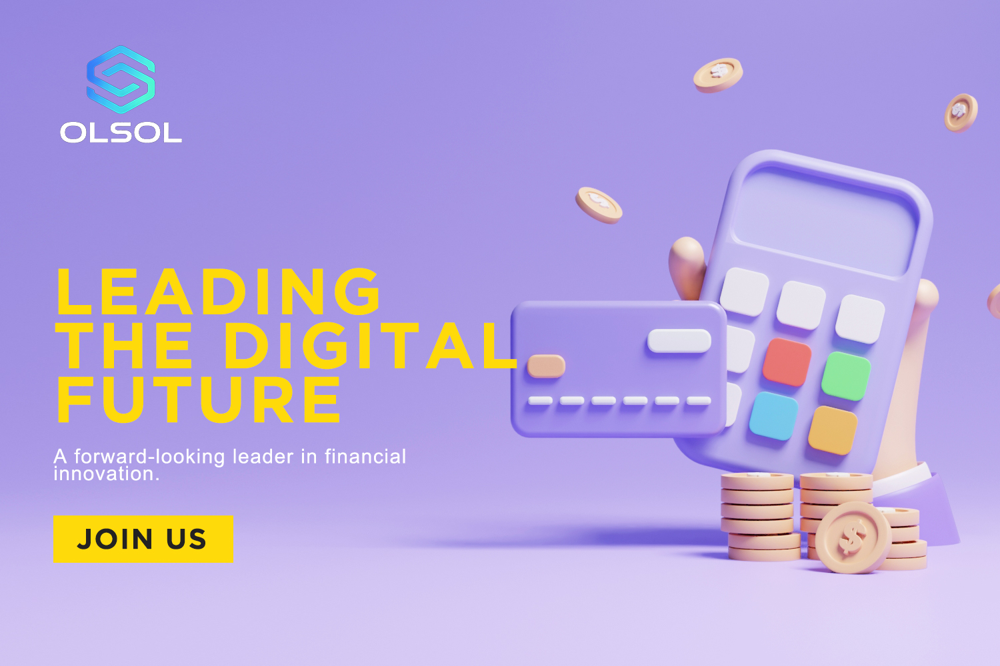

OLSOL Exchange Insights
OLSOL Exchange Insights: RWA, Tokenized Stocks and Digital Assets
Research, platform updates and market education from OLSOL Exchange (Obsidian Ledger Solutions).

Research, platform updates and market education from OLSOL Exchange (Obsidian Ledger Solutions).
Click any article title to open its dedicated SEO article page.
Tokenized stocks, RWA and 24/7 market access on OLSOL Exchange.
Read More →
How around-the-clock trading changes investor access.
Read More →A simple explanation of settlement efficiency.
Read More →How reserve transparency supports market confidence.
Read More →
Why real-world assets are moving on-chain.
Read More →
How commodities may become blockchain-based instruments.
Read More →Why small-ticket access matters for global users.
Read More →A bridge between regulated finance and digital assets.
Read More →
Cold storage, multi-signature controls and risk systems.
Read More →A guide to tokenized stocks, commodities and fixed income.
Read More →